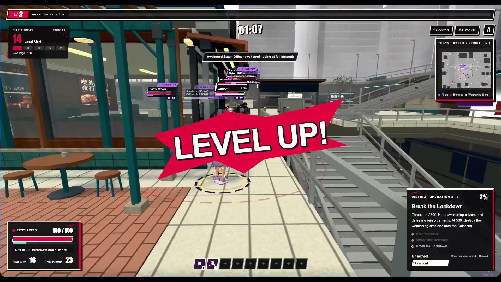
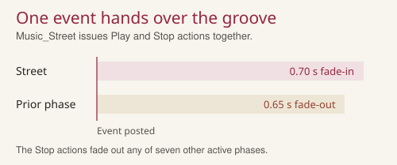
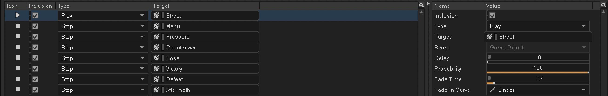
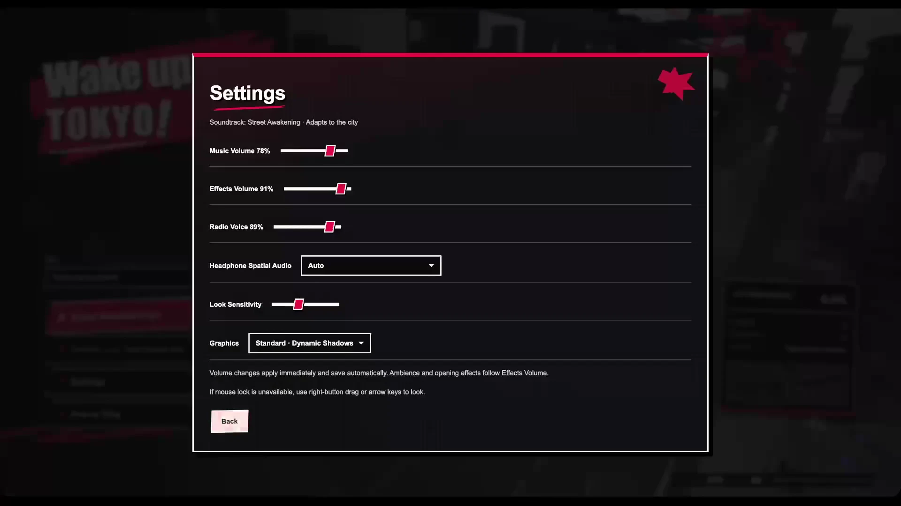
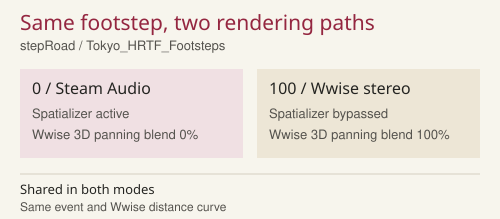
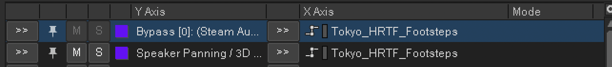
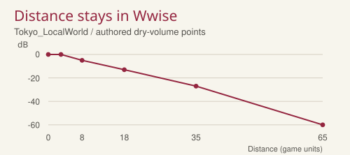
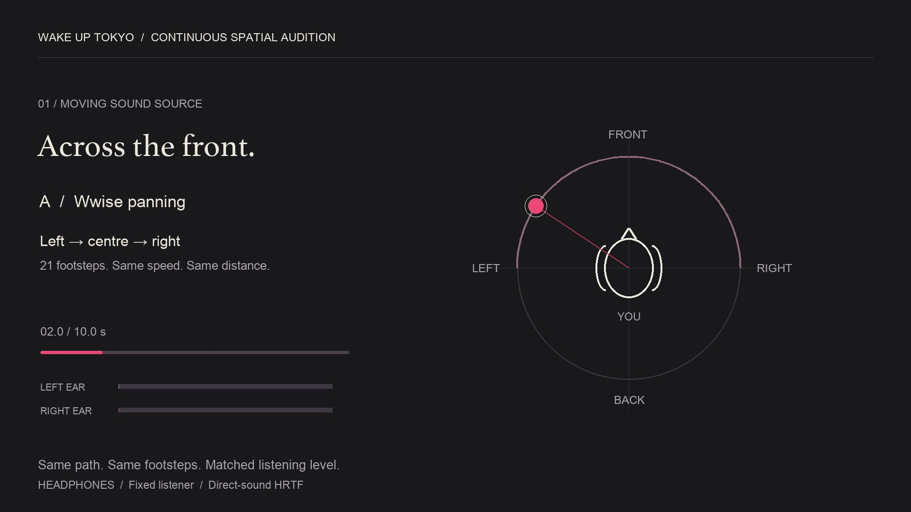

02 / Third-person action game for browser
Wake Up Tokyo
A third-person browser action game in which the player awakens citizens and leads a growing crowd through Tokyo.
- My work
- Sound editing · Wwise Web · Steam Audio integration
- Engine
- Browser · Wwise Web · Steam Audio
- Project
- Team game · 2026
My continuous gameplay recording
03:41
Sound design
I edited and implemented the melee, progression and movement cues, prepared the music, and integrated Wwise and Steam Audio into the browser build. Game programming and visuals are team work.
Melee and progression
Listen for the contrast between light and heavy punches, then the short card and upgrade confirmations.
Music and radio
The street loop continues beneath action. Radio and important feedback temporarily change the mix balance.
Footstep direction
The audio implementation section below isolates moving footsteps for a matched Wwise / Steam Audio comparison.
Process & implementation
Audio implementation & Wwise
This case study covers Wwise event authoring and a Steam Audio headphone mode, using the same footstep source for a controlled listening comparison.
Gameplay, Wwise and spatial audio
02:36Wwise event authoring
A music handover with explicit fade times.
Changing game phase should replace the current cue without leaving two full music layers running.
Music_Street starts the street cue with a 0.70 s fade-in. The same event stops seven other music phases with 0.65 s fades.
Melee and progression events can be auditioned separately at 00:39 in the demonstration. At 02:09, the video returns to their balance with the street music.

The handover into street music
Wwise event


- 01
Start the street phase
The game posts Music_Street. The incoming cue fades in over 0.70 s while Stop actions fade out any active music from seven other phases over 0.65 s.
- 02
Keep the pulse audible
Radio-triggered, frequency-selective ducking gives the foreground room. Longer music and selected radio or ambience files stream through the browser.
Listen for At 02:09, follow the street groove beneath the complete game mix. Compare this with the isolated Wwise auditions at 00:39.
Steam Audio · problem and implementation
Compare the same movement through two renderers.
Left-right panning alone does not supply the spectral cues used to distinguish a source in front from one behind.
Steam Audio is Valve’s spatial audio SDK. Its HRTF renderer filters the signal for each ear according to the source direction relative to the listener. I applied it to footsteps in the browser’s Wwise audio engine.
The footstep event, randomisation and distance curve stay in Wwise. Tokyo_HRTF_Footsteps changes both the Spatializer bypass and the native 3D panning blend, so switching modes does not require a second set of samples.

One RTPC switches the rendering route
Wwise Authoring


- 01
RTPC 0 · Steam Audio
The Spatializer is active and Wwise’s native 3D panning blend is 0. Source direction comes from the listener and emitter transforms.
- 02
RTPC 100 · Wwise panning
The effect is bypassed and the native blend returns to 100%. Event selection and the authored distance curve remain unchanged.
- 03
Browser playback
Wwise 2025.1 and Steam Audio 4.8.1 run in WebAssembly through an AudioWorklet. The same control can be changed while playing.
Listen for Use the moving-source comparison below to follow the same left-to-right path through both rendering routes.
Compare the two renders ↓Inspect the source evidence

Follow the footsteps from left to right
Use headphones. Each A/B repeats the same 21 footsteps along the same path, at the same speed and distance. Compare a pass across the front with a pass behind the listener. Overall listening levels are matched.

00:03 front / Wwise · 00:13 front / Steam Audio · 00:23 rear / Wwise · 00:33 rear / Steam Audio. Direct-sound HRTF only.
Listening method and scope
Hold the source and trajectory constant.
A useful A/B needs the same moving source in both versions.
Each pass contains 21 road footsteps on a fixed-radius path, moving left to right across the front or rear of a stationary listener. The event sequence and speed are identical. One constant gain per renderer matches the overall listening level.
These are offline renders of the actual Wwise / Steam Audio runtime. Listen for front-back placement and timbral changes through the centre. This demonstrates direct-sound HRTF; it does not measure localisation accuracy or demonstrate reflections and occlusion.
The game offers a footsteps-only mode and a broader mode. Auto uses Wwise panning on touch devices. Mobile performance and listener localisation have not been measured.
References
Play the game
Desktop browser and headphones recommended. WASD: move · mouse: look · J / K: attacks · Space: jump · Esc: pause. The downloadable web build includes launch instructions.
Roles & sources
Game and visuals: Wake Up Tokyo team. Audio editing, Wwise authoring and browser audio integration: Hu JinLin, with AI-assisted implementation.
Music includes Suno-generated material selected and edited for the game. Gunfire design is not presented as my work.
Steam Audio: Valve. The moving-source demonstration was rendered offline from the project’s actual runtime; the continuous screen recording appears above.